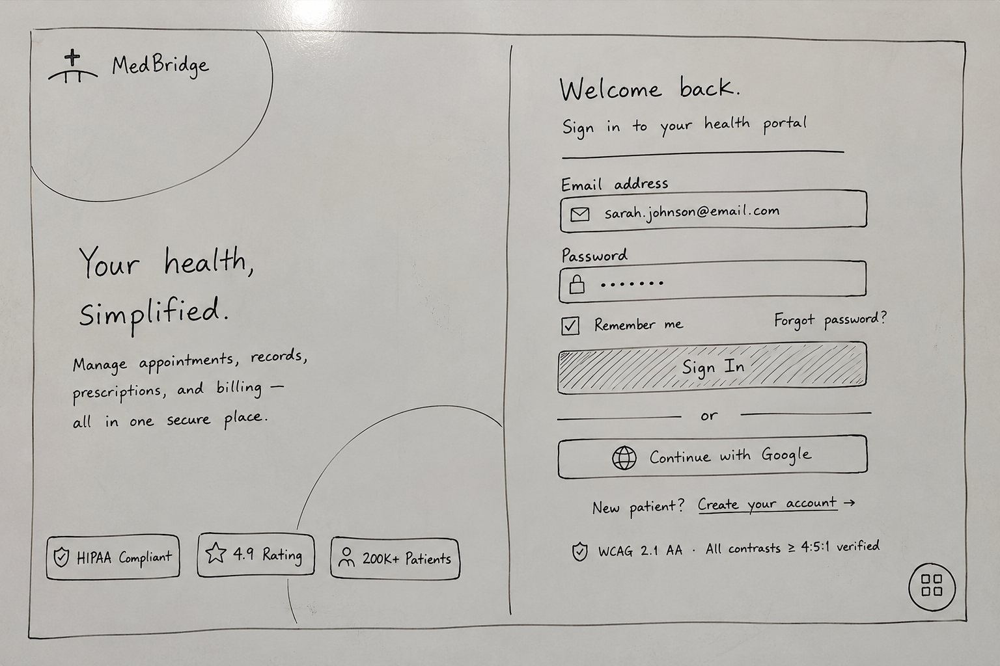
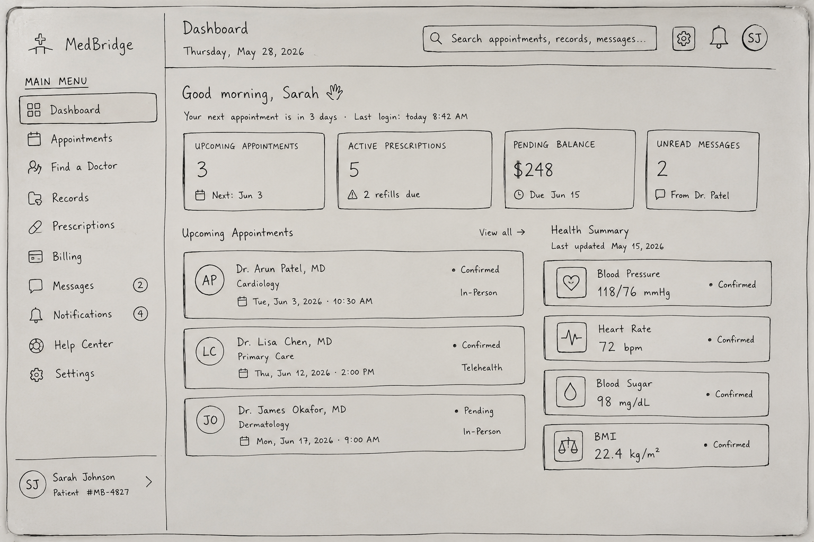
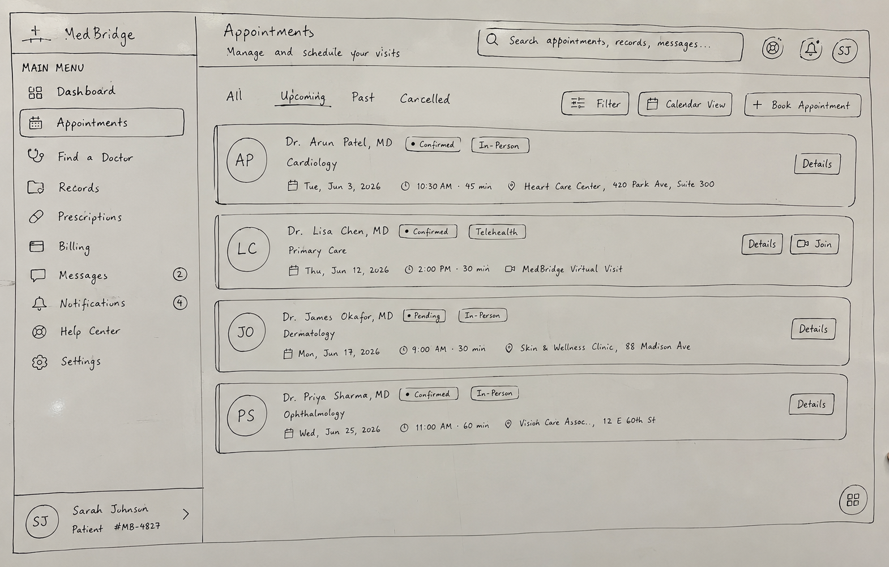
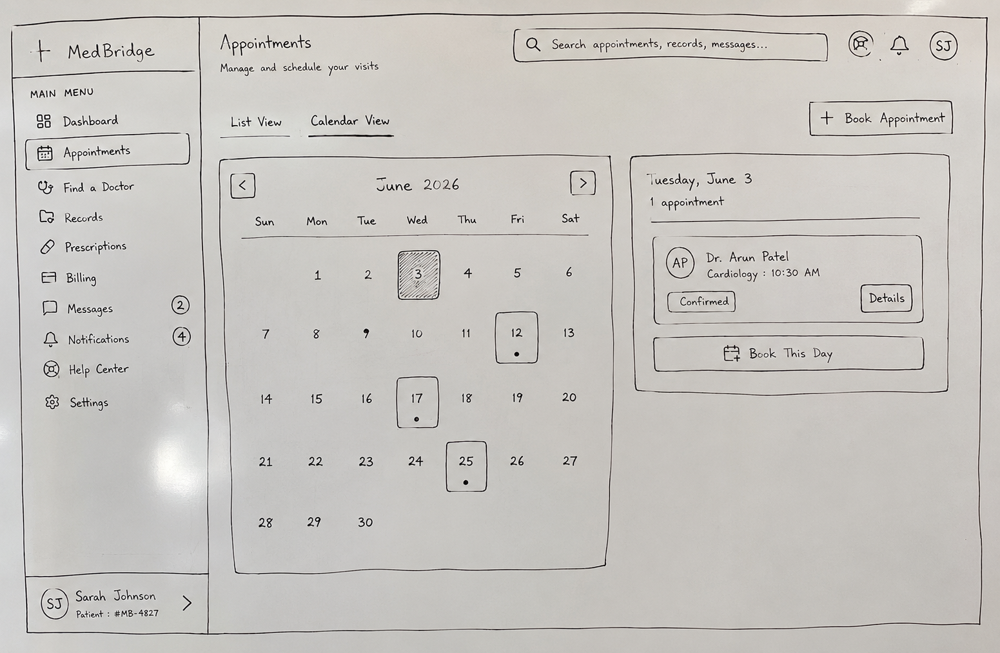
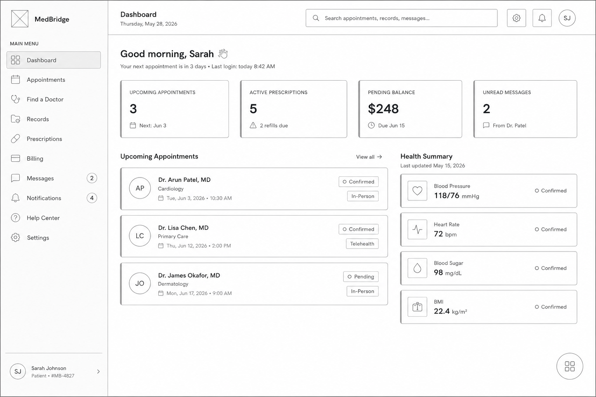
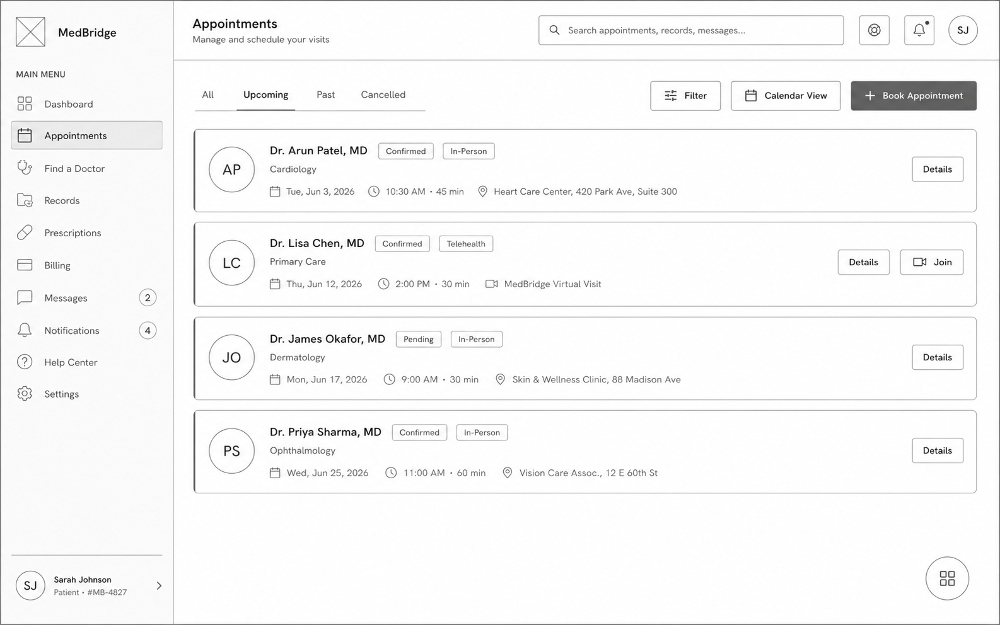
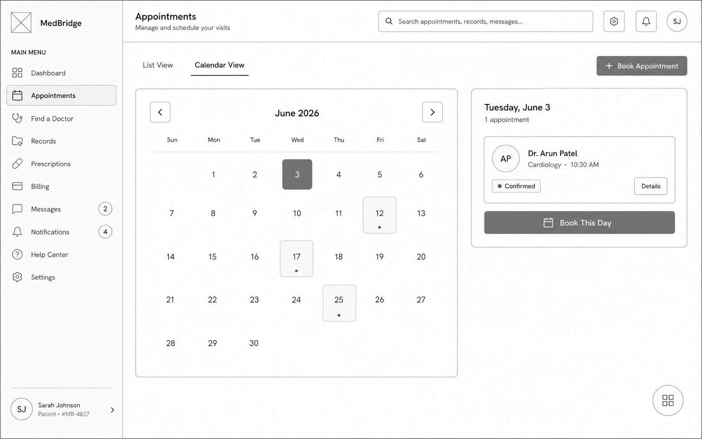

MedBridge — a patient portal that finally makes sense.
End-to-end redesign unifying appointments, prescriptions, records, and billing into one calm, secure, accessible experience.
Patients juggled four disconnected portals and still couldn't find basic information.
The existing patient portal scattered appointments, prescriptions, medical records, and billing across separate sections with no shared navigation. Patients called the support line for simple tasks. The mental model didn't match real-world healthcare needs.
This wasn't a visual problem. It was a structural one. The portal was built as four separate tools — and patients experienced it exactly that way.
Three patterns that shaped every decision that followed.
User interviews, support-call analysis, and competitive review across five existing healthcare portals surfaced the same friction points across every participant.
Patients treat the portal as one product
Every interview participant described "the portal" as a single thing — but experienced it as four disconnected tools. Navigation drop-off was highest when users tried to switch between service areas.
Appointments are the front door
Scheduling and managing visits was the most frequent entry point. Yet the appointment flow required the most clicks and had the most dead-end navigation paths of any section in the portal.
Stress amplifies every usability flaw
Patients access health portals during anxious moments — before a procedure, after a diagnosis, when a prescription runs out. Cognitive load was already high before any interaction began. Clarity wasn't a nice-to-have.
Paper first. Before committing to anything.
Hand-drawn sketches let me stress-test layout decisions without getting attached to pixels. Each sketch answered one structural question before moving to digital.




Digital wireframes. Decisions locked in.
Moving to digital wireframes tested whether the sketch decisions actually held up at screen fidelity — before any visual design work began.



From sketch to final — the dashboard flow.
The dashboard shows the clearest three-stage progression. The core layout decision — KPIs above the fold, two content blocks below — was made in the sketch and never changed.
KPI card structure and two-column layout established. Structure was right from the first pass.
Digital wireframe validated the layout. Health Summary panel confirmed as the right complement to the appointments list.

Visual system applied. The structure from the sketch is unchanged — the hierarchy was already solved.
One system. Five unified flows.
Appointments, records, prescriptions, billing, and profile all share one navigation model and one component language. Consistency reduces cognitive load when patients are already under stress.


"This wasn't a visual redesign. It was a clarity redesign. Every decision was tested against one question: would a patient under stress still understand what to do next?"
Design principle · MedBridge
One portal, five unified flows.
The final redesign collapsed four disconnected portal sections into one system with consistent navigation, predictable interactions, and full WCAG 2.1 AA compliance. Appointment booking, prescription refills, billing, medical records, and profile management share one mental model and one component language.
What I'd do differently.
I'd include caregiver flows from the start. Research mentioned older patients often had a family member navigating on their behalf — but I designed entirely for the patient as primary user. A caregiver access model would meaningfully change several IA decisions.
The mobile experience was designed after desktop. Given that appointment check-ins and prescription refills happen most often on phones, I'd reverse that order — mobile-first wireframing, then scale up to desktop.
Accessibility was built into components, but I didn't test with screen reader users during wireframing. I'd add at least one assistive-technology session early in the lo-fi stage, not only as a final audit before handoff.